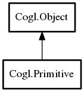

- Primitive
- texture_set_auto_mipmap
- Primitive
- Primitive.p2
- Primitive.p2c4
- Primitive.p2t2
- Primitive.p2t2c4
- Primitive.p3
- Primitive.p3c4
- Primitive.p3t2
- Primitive.p3t2c4
- Primitive.with_attributes
- copy
- draw
- foreach_attribute
- get_first_vertex
- get_indices
- get_mode
- get_n_vertices
- set_attributes
- set_first_vertex
- set_indices
- set_mode
- set_n_vertices
Primitive
Object Hierarchy:
Description:
Namespace: Cogl
Package: doc
Content:
Static methods:
- public static void texture_set_auto_mipmap (PrimitiveTexture primitive_texture, Bool value)
Sets whether the texture will automatically update the smaller mipmap levels after any part of level 0 is updated.
Creation methods:
- protected Primitive ()
Combines a set of Attribute<!-- -->s with a specific draw
modeand defines a vertex count so a Primitive object can be retained and drawn later with no addition information required. - public Primitive.p2 (Context context, VerticesMode mode, VertexP2[] data)
Provides a convenient way to describe a primitive, such as a single triangle strip or a triangle fan, that will internally allocate the necessary AttributeBuffer storage, describe the position attribute with a Attribute and upload your data.
- public Primitive.p2c4 (Context context, VerticesMode mode, VertexP2C4[] data)
Provides a convenient way to describe a primitive, such as a single triangle strip or a triangle fan, that will internally allocate the necessary AttributeBuffer storage, describe the position and color attributes with Attribute <!-- -->s and upload your data.
- public Primitive.p2t2 (Context context, VerticesMode mode, VertexP2T2[] data)
Provides a convenient way to describe a primitive, such as a single triangle strip or a triangle fan, that will internally allocate the necessary AttributeBuffer storage, describe the position and texture coordinate attributes with Attribute<!-- -->s and upload your data.
- public Primitive.p2t2c4 (Context context, VerticesMode mode, VertexP2T2C4[] data)
Provides a convenient way to describe a primitive, such as a single triangle strip or a triangle fan, that will internally allocate the necessary AttributeBuffer storage, describe the position, texture coordinate and color attributes with Attribute<!-- -->s and upload your data.
- public Primitive.p3 (Context context, VerticesMode mode, VertexP3[] data)
Provides a convenient way to describe a primitive, such as a single triangle strip or a triangle fan, that will internally allocate the necessary AttributeBuffer storage, describe the position attribute with a Attribute and upload your data.
- public Primitive.p3c4 (Context context, VerticesMode mode, VertexP3C4[] data)
Provides a convenient way to describe a primitive, such as a single triangle strip or a triangle fan, that will internally allocate the necessary AttributeBuffer storage, describe the position and color attributes with Attribute <!-- -->s and upload your data.
- public Primitive.p3t2 (Context context, VerticesMode mode, VertexP3T2[] data)
Provides a convenient way to describe a primitive, such as a single triangle strip or a triangle fan, that will internally allocate the necessary AttributeBuffer storage, describe the position and texture coordinate attributes with Attribute<!-- -->s and upload your data.
- public Primitive.p3t2c4 (Context context, VerticesMode mode, VertexP3T2C4[] data)
Provides a convenient way to describe a primitive, such as a single triangle strip or a triangle fan, that will internally allocate the necessary AttributeBuffer storage, describe the position, texture coordinate and color attributes with Attribute<!-- -->s and upload your data.
- public Primitive.with_attributes (VerticesMode mode, int n_vertices, Attribute attributes, int n_attributes)
Combines a set of Attribute<!-- -->s with a specific draw
modeand defines a vertex count so a Primitive object can be retained and drawn later with no addition information required.
Methods:
- public Primitive copy ()
Makes a copy of an existing Primitive.
- public void draw (Framebuffer framebuffer, Pipeline pipeline)
Draws the given this geometry to the specified destination
framebufferusing the graphics processing state described bypipeline. - public void foreach_attribute (PrimitiveAttributeCallback callback)
Iterates all the attributes of the given Primitive .
- public int get_first_vertex ()
- public weak Indices get_indices ()
- public VerticesMode get_mode ()
- public int get_n_vertices ()
Queries the number of vertices to read when drawing the given this.
- public void set_attributes (Attribute attributes, int n_attributes)
Replaces all the attributes of the given Primitive object.
- public void set_first_vertex (int first_vertex)
- public void set_indices (Indices indices, int n_indices)
Associates a sequence of Indices with the given this.
- public void set_mode (VerticesMode mode)
- public void set_n_vertices (int n_vertices)
Specifies how many vertices should be read when drawing the given this.
Inherited Members:
All known members inherited from class Cogl.Object